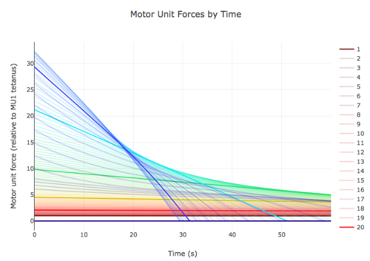

At the end of 2017 I started studying machine learning and doing related projects full time. I completed Andrew Ng's Machine Learning Coursera course, and his Deep Learning specialization series of five smaller courses. I also attended the Fast.ai Deep Learning course in person in December. I am currently enrolled in the Deep Reinforcement Learning Nanodegree from Udacity.
Previously I was a lead software engineer at Fetch Robotics where I did front and backend web development as well as product management. Before that I was briefly CEO of my own consumer robotics company where we made furry robot pets. I've also written code for Numenta (machine intelligence research), AnyBots (telepresence robotics), and PBWorks (hosted wikis).
Before my technical career I earned a B.A. in Psychology from Whitman College and did graduate neuroscience course work with Kenneth Campbell of the Brain and Mind Research Institute.
PyMuscle (github) - PyMuscle provides a fast motor unit based model of skeletal muscle for Python. It simulates the complex per-unit relationship between excitatory input and motor-unit output as well as fatigue over time. This complexity is generally missing from agent control today.
It is compatible with OpenAI Gym environments and is intended to be useful for researchers in the machine learning community.
Generalization - How do we create a single agent which can accomplish multiple tasks? What is the environment in which such an agent will naturally learn component abilities which will enable it to repeatably gain a wide variety of skills?
Muscle Control - Controlling muscles is the primary way biological creatures can affect the world. These are dynamic, noisy, innacurate tools which vary their properties over multiple timescales, and yet biological creatures quickly develop high skill in their control. I work with simulated agents rigged with muscles at various levels of fidelity to explore this task which appears foundational for all known intelligences.
Learned Reward Signals - How do we augment reinforcement learning to overcome the reward shaping problem? What are the mechanisms by which an agent can learn what should constitute a reward and what should not?
Lifelong Learning - How do we accomplish all of the above without suffering from catastrophic forgetting?
I am open to hearing about opportunities in machine learning (research and applied) and web development supporting the same. While I appreciate the interest, I will politely decline work focused on self-driving cars or military applications of ML/AI.
email - iandanforth@gmail.com
github - iandanforth
twitter - iandanforth
linkedin - iandanforth